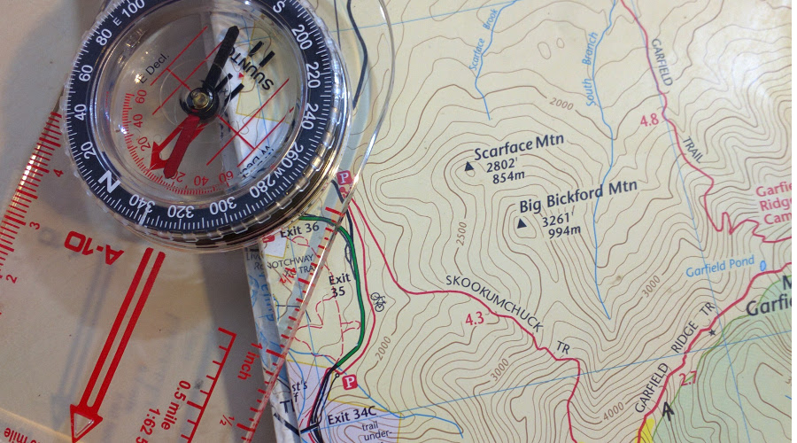
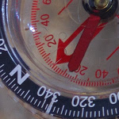
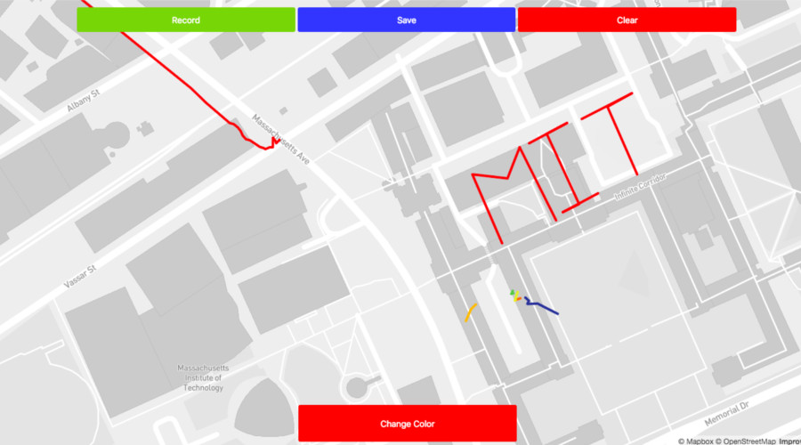

Christopher Robert Saulnier

PhD Candidate,
Product Design and Engineering Education
MIT-SUTD Collaboration Office
Massachusetts Institute of Technology
Contact:
77 Mass. Ave, Building 3-339L, Cambridge, MA, 02139.
saulnier at mit dot edu
MIT-SUTD Collaboration Office
Massachusetts Institute of Technology
Contact:
77 Mass. Ave, Building 3-339L, Cambridge, MA, 02139.
saulnier at mit dot edu
Exploring with Collaborative Smartphone Graffiti

Outer Space is exciting - who didn't want to be an Astronaut at some point in their lives? - but what about the terrestrial terrain that surrounds us? For most of us - this inner space is really as exotic and foreign as any location in outer space.
Location is a really interesting thing. Today we often have our phone relaying left and right turns if we need to get from A to B - but how many of us could point towards North, or know when we've walked a mile.

Location is a really interesting thing. Today we often have our phone relaying left and right turns if we need to get from A to B - but how many of us could point towards North, or know when we\'ve walked a mile.';" alt="" title="" border="">
Location is a really interesting thing. Today we often have our phone relaying left and right turns if we need to get from A to B - but how many of us could point towards North, or know when we\'ve walked a mile.';" alt="" title="" border="">

The website uses the HTML5 geolocation API which should work across most browsers and smartphones. The interface is a Mapbox GL JS website using geoJSON data structures to record and store data. It is meant to be used on smartphones and allow users to explore moving around in the world and collaborate with strangers while needing to master some navigation related skills.';" alt="" title="" border="" >
The website uses the HTML5 geolocation API which should work across most browsers and smartphones. The interface is a Mapbox GL JS website using geoJSON data structures to record and store data. It is meant to be used on smartphones and allow users to explore moving around in the world and collaborate with strangers while needing to master some navigation related skills.';" alt="" title="" border="" >
This is a cup of coffee beside the popular coffee shop Flour on Mass Ave.';" alt="" title="" border="">
here however it may not play nice if you don\'t have MIT certificates as browsers are unhappy with geolocation information being accessed not over HTTPS, and MITs HTTPS hosting is wonky. This has limited activity to a few squiggles around Boston.';" alt="" title="" border="">
© Chris Saulnier 2018